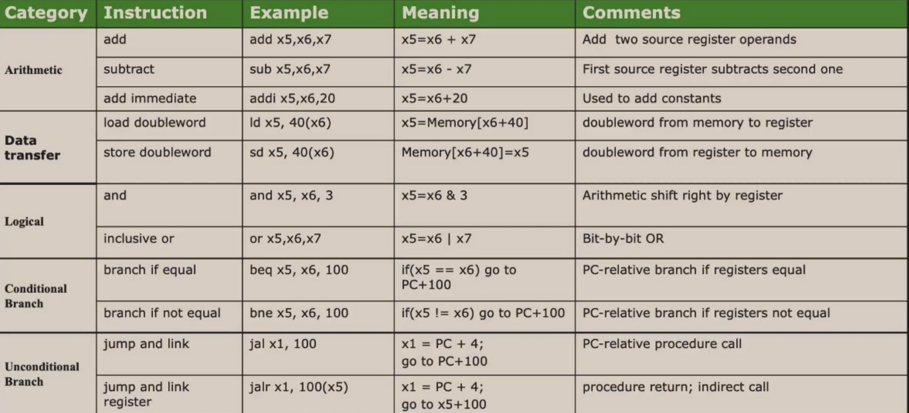
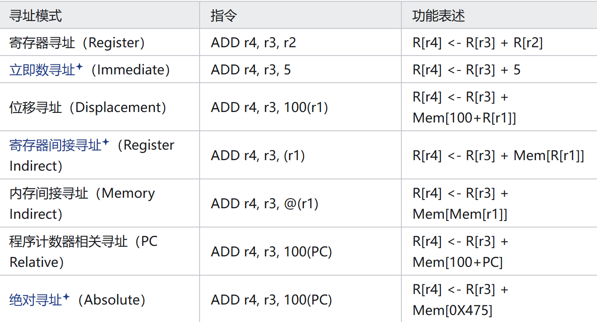
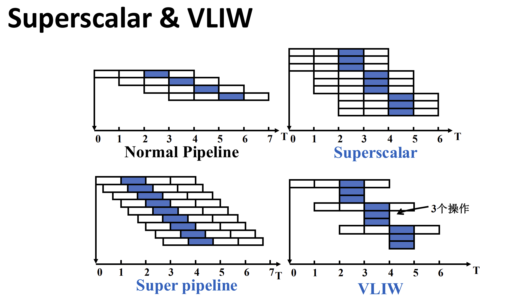
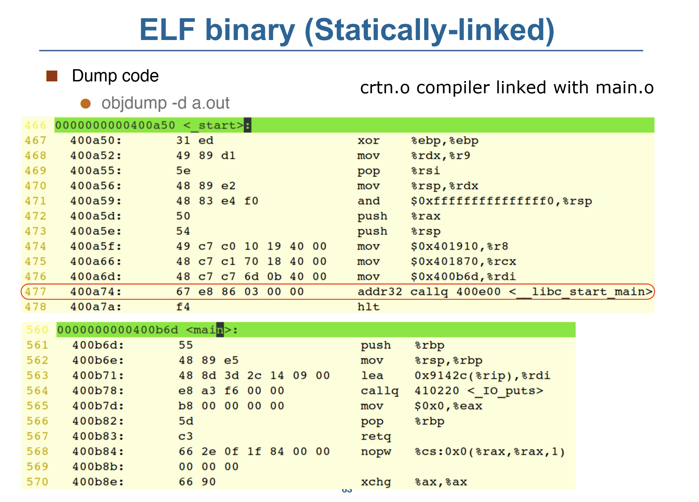
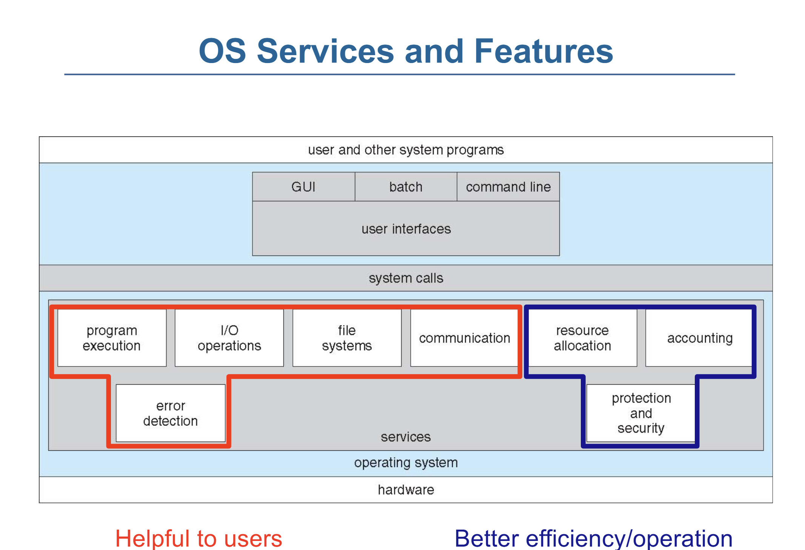
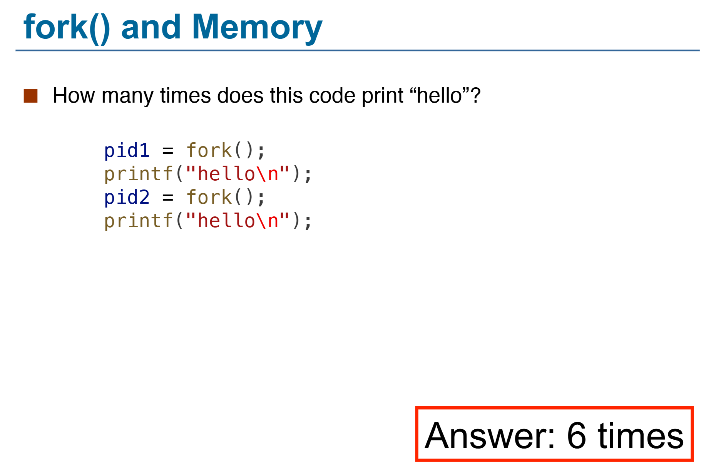
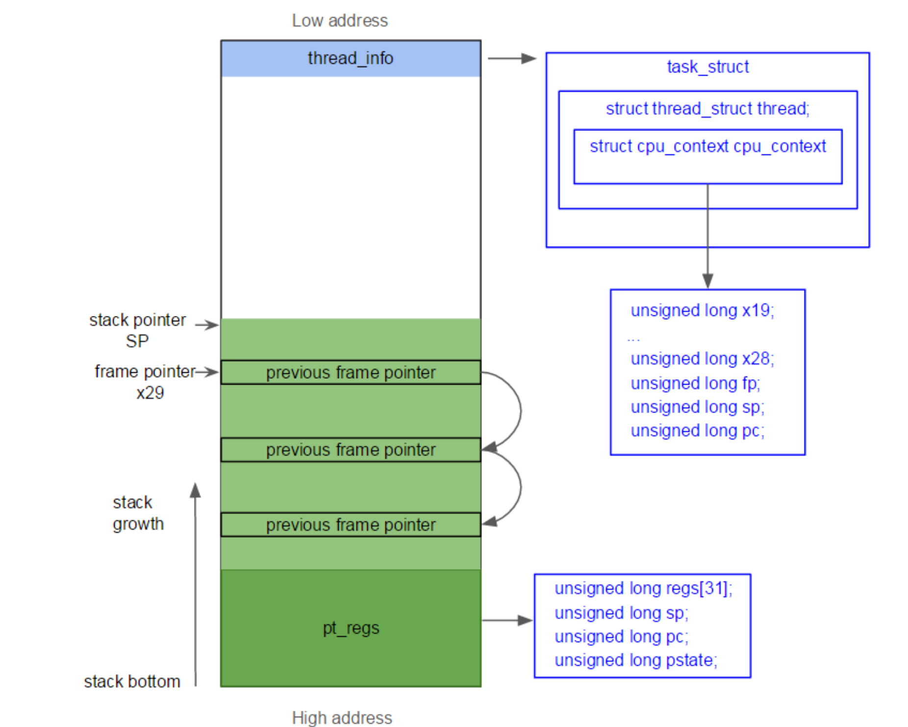
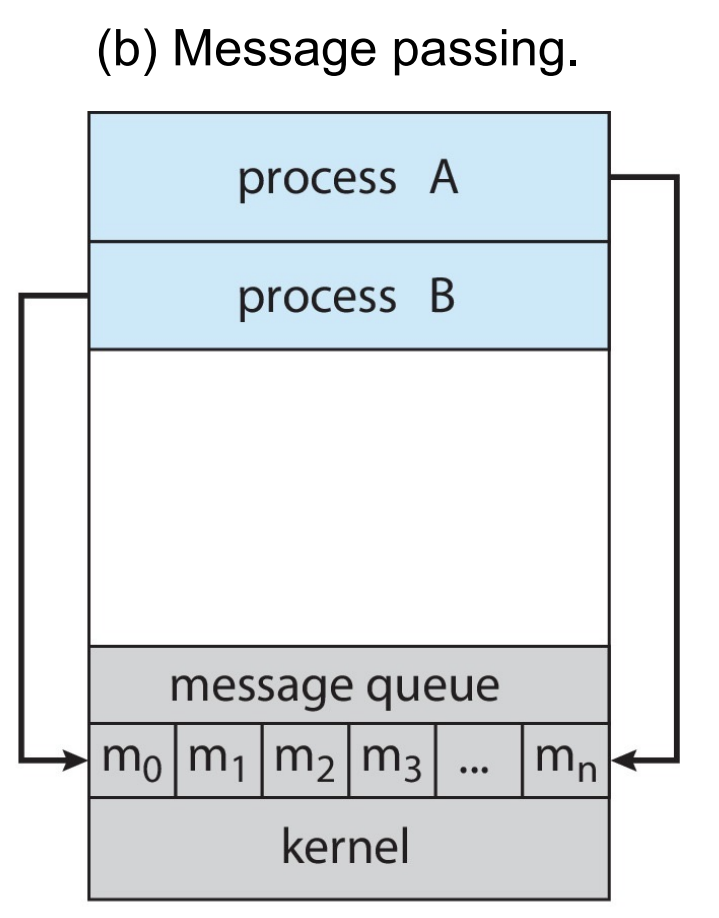
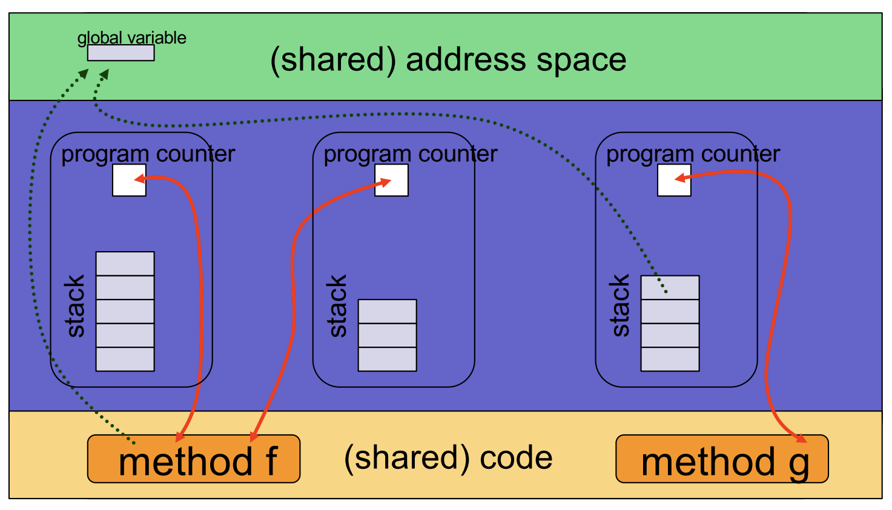
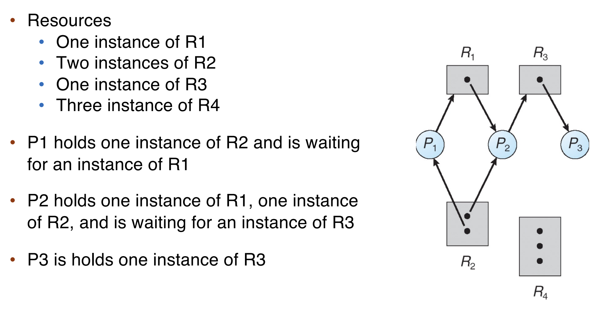

Can u feel it?
计算机系统 Ⅱ¶
约 8492 个字 182 行代码 38 张图片 预计阅读时间 27 分钟
ISA 指令集体系结构¶
分类 - 根据内部存储结构¶
- 栈 Architecture
- 操作数在栈顶（TOS: Top of Stack）
- 对于 C = A + B，指令为
push A; push B; add; pop C
- 累加器 Architecture
- 一个隐式操作数来自累加寄存器，另一个来自内存，计算结果在累加寄存器中
- 对于 C = A + B，指令为
load A, add B, store C
- 寄存器-内存 Architecture
- 所有指令都可以访问内存
- 第二个操作数（以下例子中为
B）来自内存 - 对于 C = A + B，指令为
load R1, A; Add R3, R1, B; Store R3, C
- 寄存器-寄存器: Load/Store Architecture
- 操作数都在寄存器中
- 对于 C = A + B，指令为
Load R1, A; Load R2, B; Add R3, R1, R2; Store R3, C
Practice
D = A * B - (A + C * B)
Register-Memory
RISC-V ISA 汇编¶
（其实是系统一的东西）32 位指令
- Opcode: 操作码，用于识别指令类型
- rs1: the first register source operand
- rs2: the second register source operand
- rd: the register destination operand
- funct3/7: （从Opcode的指令类型中）确定特定的指令
- imm: immediate value or address

寄存器与内存：

一些例子：

Addressing Mode 寻址模式¶

Also Ref: https://note.tonycrane.cc/cs/system/cs1/topic5/
Pipelining 流水线概述¶
通过Overlapping的方式，将多个指令的多个阶段同时进行，提高吞吐量，以提高CPU的效率。
定义吞吐量（Throughput/TP）：单位时间内完成的指令数。
\(TP = \frac{n}{T} \lt TP_{max}\)且\(T = (m+n-1) \times \Delta t_0\)，其中\(m\)为流水线级数，\(n\)为指令数，\(\Delta t_0\)为流水线时钟周期。
\(TP_{max} = \lim_{n\to\infty} \frac{n}{T} = \frac{1}{\Delta t_0}\)
Solve Bottleneck¶
- Subdivide the task
- Repetition
定义加速比（Speedup/SP）：\(Sp = \frac{Exetime_{non-pipe}}{Exetime_{pipe}} = \frac{nm\Delta t_0}{(m+n-1)\Delta t_0} = \frac{nm}{n+m-1}\)
\(n \to \infty\)时，\(Sp \to m\) （理想加速比为流水线级数）
效率\(E = \frac{SP}{m} = TP \cdot \Delta t_0\)
Hazard 冲突¶
结构冲突¶
多条指令在同一时钟周期抢着访问同一个物理资源。
Solution：
- Stall（Always works）
- 添加更多硬件
数据冲突¶
控制冲突¶
分支预测
- 静态分支预测：总是预测分支不发生
- 动态分支预测：根据历史记录预测
- 维护分支历史记录表（Branch History Table）
非线性流水线¶
Multiple Issue 多发射¶
为了改进指令级别的并行（ILP, Instruction Level Parallelism），除了加深流水线外，还可以同时发射多条指令。
- 静态多发射：编译器把多条指令打包到“issue slots”中
- 编译器探测并避免冲突
- 动态多发射：CPU解析指令流，选出多发射的指令
- 编译器可以通过重排指令来提高多发射的效率
- CPU 在运行时解决冲突
下面是三种多发射的处理器：
Superscalar 超标量¶
- 每个时钟周期发射的指令不固定，最多可达\(n\)条。（称为\(n\)-issue）
- 可以静态由编译器指定，或动态由Tomasulo算法决定
VLIW (Very Long Instruction Word) 超长指令字¶
- 每个时钟周期的指令数是固定的，但是每条指令包含一条长指令或是指令 packet
Super-Pipeline 超流水线¶
- 每个流水间阶段都被进一步细分，同一时钟周期内的多条指令可以 time-shared
- For a super-pipelined computer that can flow out n instructions per clock cycle, one instruction is flowed out every 1/n clock cycle
上述几种的时空图如下

冲突与中断¶
我感觉不考
Computer Architecture 计算机体系结构¶
冯诺依曼架构：I/O System <-> CPU <-> Memory
存储在内存中的数据，基本单元是Byte，每个数据都被一个地址标记，一台机器上所有的地址的位数是一样的。
当一个程序加载到内存中，它的地址空间（Address Space）分为两部分：Code 和 Data。
Operating System 操作系统¶
ELF 概述¶
C程序编译为可执行文件的四个过程：
- 预处理 —— 宏展开
- 编译 —— 源代码转为汇编
- 汇编 —— 汇编转为机器码
- 链接 —— 将多个目标文件链接为一个可执行文件，链接库
最终的可执行文件包含一个 crt(C runtime)，这个 crt 内会调用 main 函数。
ELF - Executable and Linkable Format 二进制文件内包含如下段（Section）：
- .text: 代码段
- .rodata: read only 数据段
- .data: 初始化数据段
- .bss: 未初始化数据段
-
Static linking
- All needed code is packed in single binary, leading to large binary
_startis executed after evecve system call- 
-
Dynamic linking
- Reuse libraries to reduce ELF file size
- Howto resolve library calls?
- It is the loader who resolves lib calls.
- Entry point 是 loader


_libc_start_main: Setup environment and stack, then call main
Memory Layout 内存布局¶

在二进制文件运行时的内存布局。
注意 stack 从高地址向低地址增长，heap 从低地址向高地址增长。

可能的考点（来自复习课）
- 线程可以共享 Heap，但不共享 Stack，为什么？
- Stack 里含有返回地址等信息，不适合共享
DMA(Direct Memory Access)：设备直接访问内存，不经过CPU。
OS Structure 操作系统结构¶
操作系统是一种“Resource Allocator and Abstracter”，它管理硬件资源，提供抽象接口。

UI: CLI -> GUI -> Touchscreen...
-
简单结构 Simple Structure
- MS-DOS
- 不区分用户和内核态
- 用户程序、操作系统程序、驱动程序都运行在同一个地址空间，可以互相操作
-
整体结构 Monolithic Structure
- Unix
- 有区分用户和内核态
- 操作系统程序运行在内核态，用户程序运行在用户态
- 用户程序通过系统调用访问内核态
- 内核态程序给用户态程序接口来提供服务
-
微内核结构 Microkernel Structure
- Mach, Minix...
- 防止内核态程序过于复杂，漏洞概率更大
- 尽可能多地将内核代码移动到用户态中
- 内核只提供最基本的服务，其他服务通过进程间通信实现：更稳定
- 将操作系统的功能分为多个独立的进程
- 可移植性更好
-
模块化结构 Modular Structure
- Linux (Modular + Monolithic)
- 将内核分为多个模块（loadable kernel module），每个模块负责一个特定的功能
- 模块可以动态加载和卸载
- 保持了微内核结构的优点，同时减少了进程间通信的开销
-
外核结构 Exokernel Structure
- 外内核则进行更少的抽象，来让用户程序可以有更多控制物理资源的可能
- 内核只进行物理资源的分配和保护，而资源的使用、管理都由用户程序自己决定
- 用户程序可以直接访问硬件资源，自己实现操作系统的功能
-
层级结构 Layered Structure
- 为了提高模块化结构的性能，将模块分为多个层次
- 最底层权限最高，为硬件
- 每个层次只能调用比自己低的层次，不能调用比自己高的层次
- 例如，文件系统、网络协议栈等
-
混合结构 Hybrid Structure
- 结合了多种结构的优点
- 例如，Windows NT, Apple Mac OS X
Event 事件¶
Event 分为 Interrupt - 由硬件引起，Exception - 由软件引起。
一些指令会被限制：只有OS能够执行它们（Privileged Instructions），CPU是如何判断当前状态能否执行这些指令的？
- All modern processors support (at least) two modes of execution:
- User mode: In this mode protected instructions cannot be executed
- Kernel mode: In this mode all instructions can be executed
- User code executes in user mode (e.g., application code)
- Kernel code executes in kernel mode (e.g., OS code)
- The mode is indicated by a status bit in a protected control register
- The CPU checks this bit before executing a protected instruction
可能的考点（来自复习课）
- 狭义操作系统：Kernel Mode
- 广义操作系统：Kernel Mode + 一部分 User Mode
- User code executes in user mode (e.g., application code)
- Kernel code executes in kernel mode (e.g., OS code)

Event是操作流中“不被预期”的情况，CPU会根据Event的类型，调用相应的Handler。
- An event stops execution, changes mode, and changes context
- The kernel defines a handlerfor each event type
OS Code running: Boot -> Wait for Event -> Event Handler -> Return to Wait
特殊的 Event：
- System Call - 会导致Trap -> System Call Handler
- 发生于User Mode下需要执行Privileged Instructions的情况
- e.g., to create a process, write to disk, read from the network card
- 每种ISA都有自己的System Call

- 为什么
printf需要SysCalllibc_write？- 打印到终端这种Device I/O需要 Kernel Mode (Privileged Instructions)
- 发生于User Mode下需要执行Privileged Instructions的情况
- Timer Interrupt - 会导致Regularly Interrupt -> Timer Interrupt Handler

System Call 系统调用（重点）¶
System Call 是操作系统提供给用户程序的接口（interface），用于访问操作系统的服务。
每个 Syscall 有自己的 Syscall Number，通过这个 Number 来调用 Syscall，这个 Number 就是 Syscall Table 的索引，OS 对具体的 Syscall 不感兴趣，只根据 Number 跳到 Kernel 中对应的 Handler。
可能的考点（来自复习课）
- System Call 中是否存在 Context Switch？
- 存在。
- Kernel Stack 和 User Stack 的区别？
- Kernel Stack 大小固定，还含有 PCB 的指针信息
strace可以查看程序的System Call。
https://www.cnblogs.com/machangwei-8/p/10388883.html
SysCall的类型：
-
Process control
- create process, terminate process
- end, abort
- load, execute
- get process attributes, set process attributes
- wait for time
- wait event, signal event
- allocate and free memory
- Dump memory if error
- Debuggerfor determining bugs, single step execution
- Locks for managing access to shared data between processes
-
File management
- create file, delete fileopen, close fileread, write, reposition
- get and set file attributes
-
Device management
- request device, release device
- read, write, repositionget device attributes, set device attributes
- logically attach or detach devices
-
Information maintenance
- get time or date, set time or date
- get system data, set system data
- get and set process, file, or device attributes
-
Communications
- create, delete communication connection
- send, receive messages if message passing model to host nameor process name
- From client to server
- Shared-memory model create and gain access to memory regions
- transfer status information
- attach and detach remote devices
-
Protection
- Control access to resources
- Get and set permissions
- Allow and deny user access
可能的考点（来自复习课）
kernel_entry在 Syscall 时被调用，用于保存 User Space 的寄存器信息ret_to_user在 Syscall 结束时被调用，用于恢复 User Space 的寄存器信息，把控制流交还给 User Space
System Service 系统服务¶
可能的考点（来自复习课）
- 动态链接和静态链接的区别和优劣？
- 静态链接：所有的库都被打包进可执行文件，文件较大
- 动态链接：只有一个 loader，运行时运行
ld.so，解析符号表，加载库，文件较小
Process 进程¶
进程是一个正在执行的程序的实例，例如说一个ELF加载到内存中，开始执行。
a unit of resource allocation and protection
对于同一个Program的不同Process，它们的
- .text段是相同的（Size & Content）
- .data段的Size是相同的，但Content可能不同
- Stack和Heap两者都不同
可能的考点（来自复习课）
- 进程是 a unit of resource allocation and protection
- 线程是 a unit of execution
Process Control Block 进程控制块 PCB（重点）¶
也称为Task Control Block，是操作系统用来管理进程的数据结构，存储每个进程的信息。
- 每个进程有且仅有一个PCB。
- 在新进程创建时，OS会为其分配一个PCB
-
在进程终止时，OS会回收PCB
-
存储这些 Process 的 META data：
- Process State - Running, waiting, ready, etc.
- Program Counter - Address of next instruction
- CPU Registers - Values of all process-centric registers
- Blah blah blah...

On Linux: PCB is task_struct
Process State 进程状态¶
As a process executes, it changes state. The state of a process is defined in part by the current activity of that process.
- New: The process is being created.
- Running: Instructions are being executed.
- Waiting: The process is waiting for some event to occur.
- Ready: The process is waiting to be assigned to a processor.
- Terminated: The process has finished execution.

Process Creation 进程创建¶
一个进程可能会产生多个进程，于是形成一个进程树，ppid是某节点父进程的pid。
fork()是一个SysCall，用于创建一个新的进程，新进程是调用进程的副本（各状态初始完全一致地复制过去），但是有不同的pid，Resource Utilization初始化为0。
- 返回给父进程的是新进程的pid
- 返回给子进程的是0
可能的考点（来自复习课）
- 为什么
fork()可以返回两个值？- 这是其拷贝了两份 User Space Context
Quiz
下面这张图里，每次fork()会给当前每个进程都创建一个子进程，所以第一次fork()后有两个进程，第二次fork()后有四个进程。


- (1) 第一行
fork()后，有两个进程（Original进程和它fork出来的子进程） - (2) 第二行在if后括号中的
fork()后，有四个进程 - (3) 并且对 (1) 中两个进程，返回1，对 (2) 中新出现的两个进程，返回0
- 因此 (1) 中两个进程进入if(){}, (2) 中两个进程不进入if(){}
- 在条件语句中的
fork()后，新出现两个进程，目前共6个进程 - 最后的
fork()所有进程都会执行，所以最后有12个进程
exec*()¶
execve()是一个SysCall，v stands for argv（命令行参数），e stands for envp（环境变量）。
- 其余的
exec*()函数类似，但不是SysCall exec*()replaces the current process image with a new process image
exec*后，若执行成功，原进程的ELF会被替换，原进程直接终止，也没有返回值；若没有执行成功，则返回报错信息，原进程继续执行。
Process Termination¶
wait()¶

exit()¶
一个进程通过exit()的SysCall来终止自己，接收一个参数（exit/return code）
- 进程终止后，进程占用的资源会被回收
Signals 信号¶
进程可以通过信号来通知其他进程，也可以接收信号，例如说Ctrl+C实则是发送了一个SIGINT信号。
- 异步事件，程序必须处理
- SIGKILL和SIGSTOP不能被捕获或忽略（for security reasons）
- 总能Kill进程
demo: kill a infinite loop with SIGINT forbidden
Zombie Process 僵尸进程¶
子进程死亡后，它的父进程会接收到通知去执行一些清理操作，如释放内存之类。然而，若父进程并未察觉到子进程死亡（没有回收其PCB），子进程就会进入到“ 僵尸(zombie)”状态。从父进程角度看，子进程仍然存在，即使子进程实际上已经死亡。
Zombie 会占用其 PCB，不会占用CPU，但会占用内存。
A zombie lingers on until:
- its parent has handled SIGCHLD (which calls wait() for the child), or
- its parent dies

Orphan Process 孤儿进程¶
父进程运行结束，但子进程还在运行（未运行结束）的子进程就称为孤儿进程（Orphan Process）。孤儿进程最终会被 init 进程（pid 为 1）所收养，并由 init 进程对它们完成状态收集工作。
孤儿进程是没有父进程的进程，为避免孤儿进程退出时无法释放所占用的资源而变为僵尸进程，进程号为 1 的 init 进程将会接受这些孤儿进程，这一过程也被称为“收养”。init 进程就好像是一个孤儿院，专门负责处理孤儿进程的善后工作。每当出现一个孤儿进程的时候，内核就把孤儿进程的父进程设置为 init ，而 init 进程会循环地 wait() 它的已经退出的子进程。这样，当一个孤儿进程凄凉地结束了其生命周期的时候，init 进程就会出面处理它的一切善后工作。因此孤儿进程并不会有什么危害。
When a child exits, a SIGCHLD signal is sent to the parent.
init process handles child termination with a handler for SIGCHLD that calls wait().
Process Scheduling 进程调度¶
为了使CPU迅速地切换到下一个进程，Process scheduler 在 Ready 的进程中选择下一个在 Core 上运行的进程。
维护两个 Scheduling Queue：
-
Ready queue
- set of all processes residing in main memory, ready and waiting to execute
-
Wait queues
- set of processes waiting for an event (i.e. I/O)
-
进程在不同的 Queue 中频繁 Transfer，因此需要用 List 实现。

Context Switch 上下文切换（重点）¶
由于在处理 trap 时，有可能会改变系统的状态。所以在真正处理 trap 之前，我们有必要对系统的当前状态进行保存，在处理完成之后，我们再将系统恢复至原先的状态，就可以确保之前的程序继续正常运行。这里的系统状态通常是指寄存器，这些寄存器也叫做 CPU 的上下文（context）。
ZJU-SYS2-FA24
当CPU从一个进程（实则是线程Thread）切换到另一个进程时，需要保存当前进程的状态，并加载新进程的已保存的状态，这就是上下文切换。
- Context of a process is represented in the PCB
- Switch 时，System 本身并不进行什么操作
-
在两个Kernel线程中的上下文切换
- 寄存器在什么时候/哪里保存？
- where: 保存在PCB中，即
cpu_context - when: 在
context_switch()中，即在cpu_switch_to()中
-
在两个用户线程中的上下文切换
- 令人感叹的是，上下文切换必须在内核态中进行
- User context 在什么时候/哪里保存？
- when: kernel_entry; where: 每个线程（per thread）的 kernel stack 中，确切说是
pt_regs结构体内 - Kernel context 在什么时候/哪里保存？
- when:
cpu_switch_to(); where:cpu_context - 
- 下面是一个俩 User 线程的上下文切换的例子

CPU Scheduling CPU调度¶
- 定义：操作系统决定哪个进程在CPU上运行，要运行多久
- 使用 dispatcher 进行切换
- A component of the OS that’s used to switch between processes
IO burst and CPU burst¶
大多数进程的执行时间是由CPU burst和IO burst交替组成的。
因此进程可以分为两类：
-
IO bound 进程
- 大多数时间等待IO
- 包含许多短小的CPU burst
- e.g. /bin/cp
-
CPU bound 进程
- 大多数时间在CPU上运行
- IO burst很短很短（如果有的话）
- e.g. /bin/gcc
CPU Scheduler CPU调度器¶
操作系统跟踪进程的状态，在 CPU 空闲时选择下一个进程运行。
调度可分为两类
-
Preemptive Scheduling（可抢占式调度）
- 进程即使在正常执行时，也可以被抢占
- Easy for CPU to handle, most of modern choices.
-
Non-preemptive Scheduling（非抢占式调度）
- 进程只能在执行完毕或者等待IO时才能被抢占（hold CPU until it's willing to give it up）
那么调度发生在什么时候？

Scheduling Objectives 调度的目标¶
- 最大化 CPU 利用率
- 最大化吞吐量
- 最小化等待时间
-
最小化周转时间（Turnaround time）
- Time from process creation to completion
-
最小化响应时间
- Time from process creation to first response
Process Scheduling 进程调度¶
为了使CPU迅速地切换到下一个进程，Process scheduler 在 Ready 的进程中选择下一个在 Core 上运行的进程。
维护两个 Scheduling Queue：
-
Ready queue
- set of all processes residing in main memory, ready and waiting to execute
-
Wait queues
- set of processes waiting for an event (i.e. I/O)
-
进程在不同的 Queue 中频繁 Transfer，因此需要用 List 实现。
Dispatcher¶
Dispatcher 把CPU的选择交给被 Scheduler 选中的进程，包括切换至Kernel态，保存当前进程的PCB，加载新进程的PCB。
- Dispatch Latency: Time it takes for the dispatcher to stop one process and start another running
Scheduling Criteria 调度标准¶
- CPU Utilization
- Throughput
- Turnaround Time: Finsh Time - Arrival Time
- Waiting Time: Start Time - Arrival Time
- Response Time
Scheduling Algorithms 调度算法（重点！）¶
- FCFS (First-Come, First-Served)
- SJF (Shortest Job First)
- Round Robin
- Priority Scheduling
- Multilevel Queue Scheduling
- Multilevel Feedback Queue Scheduling
这里要画图了！注意 Burst Time 可看作执行时间。
FCFS
- First-Come, First-Served
- Non-preemptive
- Easy to understand and implement
- Poor in performance: 长进程会导致短进程等待时间过长
- Burst Time: P1: 24, P2: 3, P3: 3，这里展示一下以
123的顺序执行的情况，会发现比321的情况要差很多 
SJF
- 理论上的最佳方案
- 可分为两类：Non-preemptive SJF, Preemptive SJF
- Non-preemptive SJF
- 选择最短的 总的 Burst 时间

- Preemptime SJF
- 选择最短的 剩余 Burst 时间

- 这里 turnaround time 是一样的，还是完成时间减去 Arrival Time；对于 Waitng Time，会出现图里 P1 P2 这种分段执行的，这时 Waiting Time 就要分成两部分：从 Arrive 到第一次执行的时间间隔，再加上每次执行的结束时间到下次执行的开始时间的间隔
- 但是很难知道每个进程的 Burst Time
- 可以通过已发生过的 CPU Burst 预测
- Non-preemptive SJF
Round Robin
-
Preemptive
-
定义一个时间片（Time Quantum）：作为每个进程每次持续的最长时间
-
除非只剩下一个 READY 进程，否则，一个进程最多执行一个时间片长度后就得把 CPU 使用权交给另一个 READY 进程。
-
Ready Queue 是 First-IN-First-OUT
-
Scheduling:
-
从 Ready Queue 中选出第一个进程
-
设置计时器，在一个时间片长度后中断进程
-
Dispatch 该进程
-
-

-
因此对时间片的选取很重要：长 or 短？
-
短时间片
- 响应时间/互动率很好！但是额外开销太大了：因为 Dispatch 时 Context Switch 太多太耗时。
-
长时间片
- 响应时间很差，额外开支变少了：时间片很长很长时就变成 FCFS 型了
-
Priority Scheduling
- Non-Preemptive or Preemptive
- 为每个进程定义一个优先级（一个数字）
- 也即把 Ready Queue 利用为一个优先队列
- 优先级高的（一般是数字小的）先执行
- 其实优先级取“预测的下一次 Burst TIme”时就是SJF

- 来看一个优先级调度和 Round Robin 的综合
- Problem：低优先级的进程总会被抢占，几乎永不执行（Starvation）
- Solution：Increase the priority of a process as it ages.

Multilevel Queue
-
ready queue 被分成多个队列
-
比如分成交互性队列和批处理队列
-
一个进程会被永久地分到一个队列中
-
每个队列可以使用不同的 Scheduling Algorithm
-
例如，高交互性的进程队列可以使用 RR 算法，低交互的批处理队列可以使用 FCFS 算法
-
队列之间也可以进行调度
Multilevel Feedback Queues
类似 Multilevel Queue，但是进程可以在不同队列之间移动。
给交互性、I/O intensive 的进程更高的调度优先级
最最常见的调度算法
IPC(Inter-Process Communication) 进程间通信¶
进程间通信是指两个或多个进程之间交换信息的机制。
进程可以通过通信进行”合作“，例如说文件这类信息在不同进程中的共享，或者说对同一个任务的 Multi-processing。
Chrome Browser
Chrome浏览器使用进程隔离，每个标签页都是一个进程，这样一个标签页崩溃不会影响其他标签页。
- Browser Process: 管理所有的标签页，UI，硬盘和网络的IO
- Renderer Process: 每个标签页一个进程，负责渲染页面，读取HTML & CSS，加载JS。
- 在一个沙盒里运行，限制了对系统的访问
- Plugin Process: 每个插件一个进程，如Flash Player
Models of IPC 进程间通信模型¶
-
共享内存（Shared Memory）

- low-overhead: almost no SysCall
- One process creates a shared memory segment
- Processes can then “attach” it to their address spaces
- 两个进程单独地访问共享内存
-
Message Passing
- 
- high-overhead: 需要通过System Call进入Kernel态获取Message
- 每次的Message很小
- 创造一个邮筒（Mailbox），通过邮筒发送与接收消息，摧毁邮筒
-
Blocking or Non-blocking
- Blocking(同步)：发送者在信息被接收前一直Block，接收者在信息到达前一直Block
- Non-blocking(异步)：发送者持续发消息，接收者接收一条有效信息或者空消息
-
这里有一个 Buffering 的概念：
- Queue of messages attached to the link.
-
Implemented in one of three ways
- Zero capacity – no messages are queued on a link.
Sender must wait for receiver - Bounded capacity – finite length of n messages
Sender must wait if link full - Unbounded capacity – infinite length
Sender never waits
- Zero capacity – no messages are queued on a link.
-
Pipe
- Ordinary Pipe
- 一个进程写，一个进程读
- 一般是父子进程间通信
- 进程外无法访问
- 进程产生者写到
fd[1]的 write-end，进程产生者读取fd[0]的 read-end - 因此是单向的
- On Windows: Anonymous Pipe
- Named Pipe
- 两个进程之间通信
- 通过文件系统
- 双向
- 有名管道是一种特殊类型的文件，它允许无关的进程之间进行通信
- 与无名管道不同，有名管道有一个路径名与之关联，以
mkfifo()创建
- Ordinary Pipe
Thread 线程¶
Process vs Thread 进程 vs 线程¶
线程是进程的一个 Execution Unit，一个进程可以包含多个线程。每个线程有自己的 Stack 和 PC, Regs，但是共享 Data Section、Heap 和 Code Section。
简单来说，线程是执行单元，进程是资源管理单元

- Single-threaded Process
- 一个进程只有一个线程
- Multi-threaded Process
- 一个进程有多个线程
使用线程的优势：
- Economical
- 创建线程比创建进程开销更少（Code Section、Data Section、Heap 已经被加载）
- Resource Sharing
- 线程本身就是共享资源的
- No more need for IPC
- Responsiveness
- Scalability
- 一个进程中的多个线程可以并行执行，提高效率
劣势：
- 隔离性（isolation）差
- 一个线程崩溃会导致整个进程崩溃
- 很难知道是哪个线程出了问题
Thread Model 线程模型¶
- Many-to-one
- 多个User Thread映射到一个Kernel Thread
- 无法很好利用多核架构
- 一个User Thread阻塞会导致整个进程阻塞
- One-to-one
- 一个User Thread映射到一个Kernel Thread
- Create a new user thread requires work from kernel
- 开销大
- Many-to-many
- 多个User Thread映射到多个Kernel Thread
- 如果一个User Thread阻塞，Kernel 创造出一个新的 Kernel Thread，避免整个进程阻塞
- Two-level
- 可多对多，可一对一
Thread Library 线程库¶
Some demos
Linux Thread¶
使用 clone() 的 SysCall 来创建线程。有如下 flag 可选
CLONE_VM: 共享内存空间CLONE_FS: 共享文件系统信息CLONE_FILES: 共享文件描述符CLONE_SIGHAND: 共享信号处理程序
与此同时，Linux 下 task_struct 存储的是线程的 TCB，进程的 PCB 是 Leader Thread 的 TCB。（不存在 PCB 了）
同时一个 Process 可由单个线程+一个地址组成，也可以是多个线程+一个地址。
Thread Mapping 线程映射¶
一个 Task 可以在 User Mode 下执行线程，此时使用 User Code & User Stack，也可以在 Kernel Mode 下执行（例如调用个 Syscall），使用 Kernel Code & Kernel Stack
eg
执行 printf() 时，会调用 write()，write() 是一个 SysCall，因此会进入 Kernel Mode，此时会切换到 Kernel Stack，Kernel Code。
- User code: printf(...)
- Kernel code: write(...)
Synchronization 同步¶
Race Condition
由于 Thread A B 运行的 counter = counter+1 实则是多行指令（寄存器内加1，写回寄存器），因此在 Thread A 读完运算完还没有写回的时候，被 Interrupt，转为 Thread B，Thread B 读取时，读到的是初始的 counter 值，运算后再写回，再由 Thread A 写回，得到的 counter 就只加了1.
解决方案
Critical Section: 一段“原子性”的代码，同一时间段只能有一个线程在运行。
构建 Critical Section aka Synchronization 的解决方案需要满足的条件
- Mutual Exclusion: 在同⼀时刻，最多只有⼀个线程可以执⾏临界区
- Progress: 当没有线程在执⾏临界区代码时，必须在申请进⼊临界区的线程中选择⼀个线程，允许其执⾏临界区代码，保证程序执⾏的进展
- Bounded Waiting: 当⼀个进程申请进⼊临界区后，必须在有限的时间内获得许可并进⼊临界区，不能⽆限等待
Peterson's Algorithm: 两个线程的 Mutual Exclusion（只适用于两个线程）
- 假设 Load 和 Store 是原子操作（不可被中断）
- 两个进程共享下面这两个变量作为属性：
flag[2]: 进程是否准备好进入临界区int turn: 轮到哪个进程进入临界区- 伪代码如下

但是 Peterson 没有看起来那么万能，一是因为只适用两个线程，二是因为可能会导致处理器或编译器对*看起来无害*的操作指令进行重排序，这导致其要求线程的Load和Store是原子性的。
- 这在单线程进程里无所谓
- 多线程里可能会导致非预期的结果！
e.g.
两个线程共享下面两个变量：
现在线程1执行 线程2执行 最后的结果是什么？解答
- 我们预期的结果是输出100，但结果可能不是这样！
- 重排序可能导致
flag = true先执行，x = 100后执行
那咋办
- 引入内存屏障（Memory Barrier）来防止重排序
- 一句指令，使内存中所有的变化全部传播到所有其他处理器
- 现在只需要在线程1，2的两条语句之间加上
memory_barrier即可
硬件支持¶
这一块智云只有半小时有声音，这不炸了吗
我们有硬件的指令来支持同步：
Test-and-Set¶
设置并返回初始值，原子操作
bool test_set (bool *target)
{
bool rv = *target;
*target = TRUE;
return rv:
}
// 实现一个 lock(shared variable)
do {
while (test_set(&lock)); // 如果一个线程先把 lock 设置为 TRUE，那么其他线程到这一行就等待住了
// Critical Section
lock = FALSE;
// Remainder Section
} while (TRUE);
满足互斥，Progress，但是不满足 Bounded Waiting
Compare-and-Swap¶
int compare_and_swap(int *value, int expected, int new_value)
{
int temp = *value;
if (*value == expected)
*value = new_value;
return temp;
}
// 还是实现一个线程共享的 lock
do {
while (compare_and_swap(&lock, 0, 1) != 0);
// Critical Section
lock = 0;
// Remainder Section
} while (TRUE);
Atomic Variable 原子性变量¶
通过上面两种硬件支持的方法，我们可以实现一个原子性变量
Mutex Lock 互斥锁 or Spin Lock¶
利用上面两个函数，可以构造这种用于解决同步的软件方案，先acquire锁，再release锁（两个函数调用都得是原子操作），需要"busy waiting"。
func acquire(){
while(!available); // busy waiting (spin)
available = false;
}
func release(){
available = true;
}
自旋太多了！导致 CPU 利用率低。引入 yield 函数，让出 CPU 给其他线程。（moving from running state to sleeping zZZ）
- How to implement?
- Add a queue
- When the lock is locked, change process’s state to SLEEP, add to the queue, and call schedule()
Semaphore 信号量¶
yield 下的 Mutex Lock 还是利用率太低了！
Deadlock 死锁¶
两个或多个进程互相等待对方释放资源，导致所有进程都无法继续执行。
Priority Inversion 优先级反转¶
如果高优先级的进程等待低优先级的进程的 Lock，亦即，被低优先级进程抢占了
Solution
- 优先级继承
- 短暂地提高低优先级进程的优先级
Condition Variable 条件变量¶
诶，我们直接定义一个条件变量，让所有线程都等待这个条件变量的信号，这样就不会出现死锁了！
Real Problems¶
Bounded Buffer Problem 有界缓冲问题¶
两个进程，一个生产者，一个消费者，共享 n 个 buffer。
- 生产者向 buffer 中写入数据
- 消费者从 buffer 中移除数据
本问题要保证：
- 生产者不会向满的 buffer 写入数据
- 消费者不会从空的 buffer 移除数据
解决方案：定义 mutex 初始为 1，full-slots 初始为 0，empty-slots 初始为 n
// Producer Process
do {
// Produce an item
wait(empty-slots);
wait(mutex);
// add the item to the buffer
...
signal(mutex);
signal(full-slots);
} while (true);
// Consumer Process
do {
wait(full-slots);
wait(mutex);
// remove an item from the buffer
...
signal(mutex);
signal(empty-slots);
// consume the item
...
} while (true);
这里还有几个思考题（我没记
Readers-Writers Problem 读者写者问题¶
一系列进程共享一个 data set，有两种进程：
- Readers: 只读取数据，不修改
- Writers: 能读取数据，也能修改数据
- 多个 Readers 可以共存，但是 Readers 和 Writers 之间互斥，Writers 之间也互斥
解决方案：定义 mutex 初始为 1，write 初始为 1，read_count 初始为 0
mutex保护read_count，read_count 记录当前 Reader 的数量
// Writer Process
do {
wait(write);
// write shared data
...
signal(write);
} while (true);
// Reader Process
do {
wait(mutex);
read_count++;
if (read_count == 1)
wait(write);
signal(mutex);
// read shared data
...
wait(mutex);
read_count--;
if (read_count == 0)
signal(write);
signal(mutex);
} while (true);
变种
- Reader First
- Writer First
Deadlock 发生的条件¶
- Mutual Exclusion: 资源不共享，一种资源在某个时段只能被一个进程持有
- Hold and Wait: 持有至少一个资源的进程等待获取正被其他进程持有的其他资源
- No Preemption: 资源只能被持有者自愿释放
- Circular Wait: 一系列进程互相等待对方释放资源
Resource Allocation Graph
- 一个图，节点是所有进程（\({P_1, P_2, ..., P_n}\)）和资源（\({R_1, R_2, ..., R_m}\)）
- 两种边：
- Request Edge：\(P_i\) 指向 \(R_j\) 的有向边，表示 \(P_i\) 请求 \(R_j\) （进程尚未持有资源）
- Assignment Edge：\(R_j\) 指向 \(P_i\) 的有向边，表示 \(R_j\) 被 \(P_i\) 持有 （进程已经持有资源）
- 例
- 
- 这里 R 节点中不同的点代表一个资源的不同 Instance
- 这里有一类判断这种图是否含有死锁的题，思路一般是
- 先找哪个进程能执行，执行掉，然后释放资源
- 然后看能不能继续执行别的进程
Basic Facts
- 如果图中没有环，那么没有死锁
- 如果有环
- 且每个资源只有一个实例，那么有死锁
- 且每个资源有多个实例，那么可能有死锁
Deadlock 的预防 Prevention¶
只需要考虑预防上面四个条件（其一）就够了
- Prevent Mutual Exclusion: 这个可以不考虑：对于不共享的资源，额那只能互斥，对于共享的资源我们又不需要担心
- Prevent Hold and Wait: 一个进程要么在执行前一次性 Request 所有资源，要么只有在不持有任何资源时才能 Request 资源
- 导致资源利用率降低，可能会导致 Starvation
- Prevent No Preemption: 如果一个进程持有资源，但是又请求其他资源，那么就释放已持有的资源，将资源加入到 Request 队列中（没看懂）
- Prevent Circular Wait: 给资源编号，进程只能按编号递增的顺序请求资源
Deadlock 的避免 Avoidance¶
与预防不同，使用 Deadlock Avoidance 算法确保不会出现循环等待。
SAFE STATE: 如果系统能够分配资源序列，使得每个进程按某种顺序获得资源都能完成，那么系统处于 SAFE STATE
- Safe State 里的进程不会发生 Deadlock，Unsafe State 可能会发生 Deadlock
这里对于多实例的资源，使用 Banker's Algorithm，懒得记了，在 deadlock 的 ppt 靠后的部分。
感觉研究这一个例子就够了：

Deadlock 的检测 Detection¶
即使预防和避免，还是没能让死锁大人尽兴吗···
Allow system to enter deadlock state, but detect and recover from it
- 资源只有单实例
- 通过 Resource Allocation Graph 检测
- 也就是检测是否有环
- 诶，我这儿还有一离散
- 把图里所有的资源节点都视为边（我总感觉像极了离散里讲过的一个操作），之后图只有进程节点，称为 Wait-for Graph
- 资源有多实例
- 这里就需要用到类似 Banker's Algorithm 的方法了
- 就是利用 Banker，鉴定一下能不能进入 Safe State，不能就说明有死锁
Deadlock 的解决 Recovery¶
- Process Termination
- 终止死锁的进程
- 每次终止一个进程，直到死锁解除
或者
- Resource Preemption
- 抢占资源
- 选择一个进程，释放资源，回滚到某个 Checkpoint
- 可能会导致 Starvation